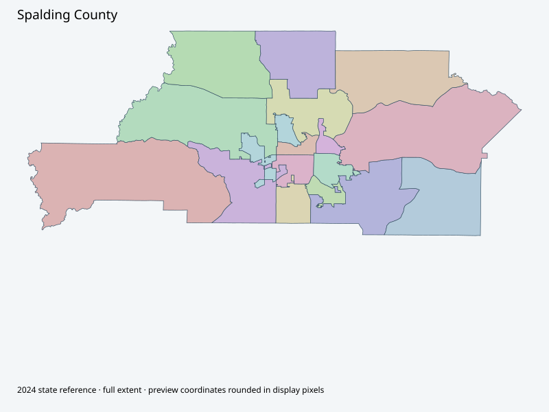

Map index · 17 explicit-FIPS 2024 map rows; 17 historical result identities. No approved crosswalk.

Full native coordinate/attribute extraction (gzip JSON) · Original complete statewide ZIP
Current official election information page describes eight polling precincts. State2024 complete geometry retained; no assumption that polling-location counts establish unchanged precinct polygons. Current original/crosswalk unavailable.
Full objects, county source IDs/clocks and attributes: all 2,701 native contexts. isVirtual:false and source label precinct do not prove physical geometry.
| Source name | Full source GUID | Breakdown ordinal | Source | Map status |
|---|---|---|---|---|
| 01 | 01000000-d884-2e72-7fc7-08dcda4bf2d7 | 0 | 2024NovGen--spalding-county-ga | unreviewed / no approved map join |
| 02 | 01000000-d884-2e72-4966-08dcda4bf2e7 | 1 | 2024NovGen--spalding-county-ga | unreviewed / no approved map join |
| 03 | 01000000-d884-2e72-dbc3-08dcda4bf2f8 | 2 | 2024NovGen--spalding-county-ga | unreviewed / no approved map join |
| 05 | 01000000-d884-2e72-d791-08dcda4bf311 | 3 | 2024NovGen--spalding-county-ga | unreviewed / no approved map join |
| 06 | 01000000-d884-2e72-0744-08dcda4bf326 | 4 | 2024NovGen--spalding-county-ga | unreviewed / no approved map join |
| 07 | 01000000-d884-2e72-e0e9-08dcda4bf336 | 5 | 2024NovGen--spalding-county-ga | unreviewed / no approved map join |
| 08 | 01000000-d884-2e72-516f-08dcda4bf347 | 6 | 2024NovGen--spalding-county-ga | unreviewed / no approved map join |
| 09 | 01000000-d884-2e72-f51b-08dcda4bf356 | 7 | 2024NovGen--spalding-county-ga | unreviewed / no approved map join |
| 10 | 01000000-d884-2e72-0862-08dcda4bf36a | 8 | 2024NovGen--spalding-county-ga | unreviewed / no approved map join |
| 11 | 01000000-d884-2e72-d53b-08dcda4bf379 | 9 | 2024NovGen--spalding-county-ga | unreviewed / no approved map join |
| 12 | 01000000-d884-2e72-fbda-08dcda4bf389 | 10 | 2024NovGen--spalding-county-ga | unreviewed / no approved map join |
| 13 | 01000000-d884-2e72-3861-08dcda4bf39a | 11 | 2024NovGen--spalding-county-ga | unreviewed / no approved map join |
| 14 | 01000000-d884-2e72-f95c-08dcda4bf3aa | 12 | 2024NovGen--spalding-county-ga | unreviewed / no approved map join |
| 16 | 01000000-d884-2e72-f194-08dcda4bf3bc | 13 | 2024NovGen--spalding-county-ga | unreviewed / no approved map join |
| 19 | 01000000-d884-2e72-0577-08dcda4bf3d0 | 14 | 2024NovGen--spalding-county-ga | unreviewed / no approved map join |
| 20 | 01000000-d884-2e72-b5ad-08dcda4bf3e0 | 15 | 2024NovGen--spalding-county-ga | unreviewed / no approved map join |
| 21 | 01000000-d884-2e72-25c8-08dcda4bf3f1 | 16 | 2024NovGen--spalding-county-ga | unreviewed / no approved map join |
| Original row ordinal | DISTRICT | PRECINCT_I | PRECINCT_N |
|---|---|---|---|
| 273 | 25512 | 12 | 12 |
| 349 | 25519 | 19 | 19 |
| 350 | 25510 | 10 | 10 |
| 351 | 2558 | 8 | 8 |
| 352 | 2555 | 5 | 5 |
| 353 | 2556 | 6 | 6 |
| 356 | 2557 | 7 | 7 |
| 357 | 25511 | 11 | 11 |
| 358 | 2551 | 1 | 1 |
| 359 | 2553 | 3 | 3 |
| 360 | 2552 | 2 | 2 |
| 361 | 25516 | 16 | 16 |
| 362 | 25520 | 20 | 20 |
| 363 | 2559 | 9 | 9 |
| 364 | 25513 | 13 | 13 |
| 398 | 25514 | 14 | 14 |
| 399 | 25521 | 21 | 21 |